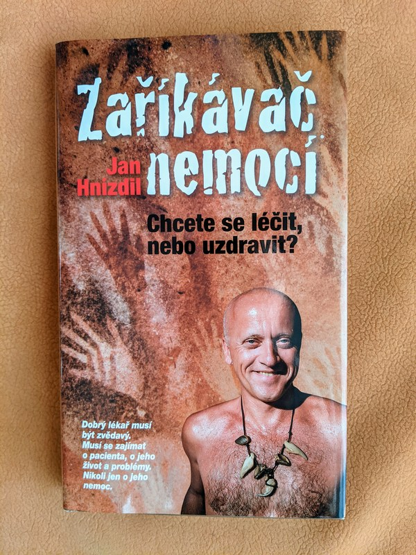
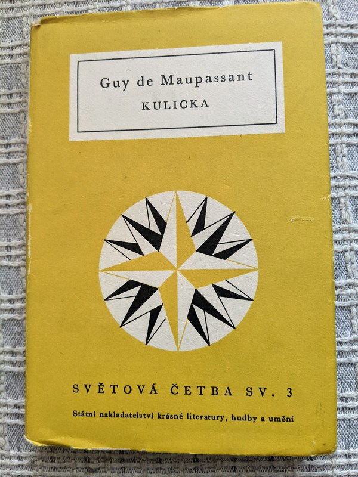
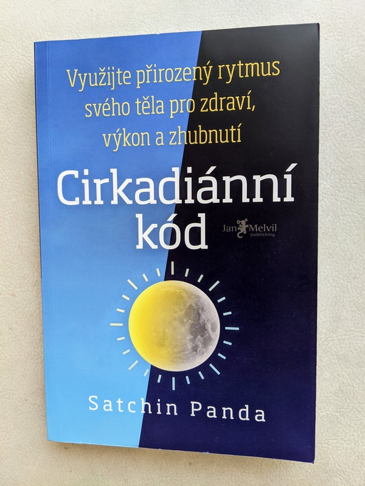
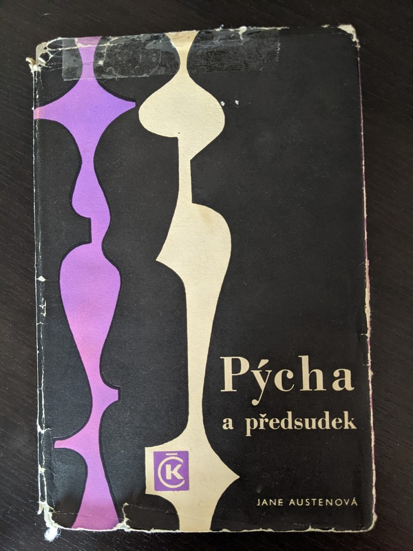

Po delší době tu mám zase literární okénko, kterým vás nechám nahlédnout do mé jarní knihovny - tak příjemné počtení ;-)
Jan Hnízdil - Zaříkávač nemocí
Příběhy z praxe jednoho z našich nejznámějších lékařů celostní medicíny mi chvilkami (byť s psychosomatikou hluboce sympatizuji) přišly už moc přitažené za vlasy a autorův postoj až přehnaně vyhraněný. Každopádně otázku, jak dalece se mýlím či ne, by mohli zodpovědět pouze samotní pacienti, kterým v této knize bohužel není věnován dostatek prostoru.

Guy de Maupassant - Kulička
Tuto knihu z edice “Světovky” jsem kdysi dávno (v maturitním ročníku?) ukořistila v kroměřížském antikvariátu a s radostí jsem ji teď oprášila (vlastně doslova :D), protože dobré klasiky není nikdy dost. Svazek obsahuje 3 krátké, ale o to silnější povídky, z nichž ta nejznámější, o charakterní prostitutce Kuličce, dala název celému souboru.

Satchin Panda - Cirkadiánní kód
Konečně jsem dočetla další z mých knižních vánočních dárků, a sice tento bestseller (nejen) o důležitosti správného svícení v našich domovech a o tom, jak vystavování se světlu a tmě má dalekosáhlý vliv na naše zdraví a fungování našeho těla. O zdravé svícení se u nás doma zajímáme už nějaký čas, pořídili jsme si do ložnice zatemňovací roletu, před spaním se snažím svítit zásadně červeným světlem a občas si od Péti půjčím jeho červené brýle a můžu říct, že toto všechno určitě přispívá k lepší kvalitě mého spánku (plus samozřejmě i to, že už v noci většinou nemusím vstávat k Olímu :)). Byla jsem zvědavá, zda mi v tomto směru kniha předá nějaké další nečekané informace. První část knihy, která se věnuje právě roli světla a tmy v návaznosti na chování našeho těla, mi rozhodně přišla informačně nejvíce přínosná. Cirkadiánní kód však není pouze o svícení - dalším krokem na cestě za lepším zdravím je přizpůsobení příjmu jídla našim vnitřním hodinám. Satchin Panda doporučuje stravování v osmihodinovém okně, což mi přijde jako naprosté sci-fi a pro mě je kolikrát problém vlézt se aspoň do těch dvanácti, když už nic jiného. Netvrdím, že bych to nechtěla někdy vyzkoušet, ale zdá se mi to už příliš omezující a jak všichni víme, co je omezující, to většinou nebývá ani dlouhodobě udržitelné. Druhá polovina knihy, zaobírající se souvislostí cirkadiánního kódu a různých civilizačních chorob, už mi pak přišla poměrně “vědecká” a méně záživná, ale také jsem ji přelouskala. Suma sumárum bych Cirkadiánní kód doporučila k přečtení jak tomu, kdo by chtěl zlepšit kvalitu svého spánku, tak i každému, kdo se nad souvislostí světelné hygieny a zdraví ještě třeba ani nezamyslel. Kniha obsahuje ucelený přehled vědecky podložených informací a myslím, že není nikdo, kdo by v tomto směru nemohl alespoň něco málo vylepšit a udělat tak ve výsledku i něco pro své zdraví :-)

Jane Austenová - Pýcha a předsudek
Pýcha a předsudek je moje srdcová záležitost a nepřestává mě fascinovat, jak čtivé a nestárnoucí tohle dílo je. Toto vydání z 60.let, které mám od pratety, si navíc v knihovničce hýčkám i tak trochu z nostalgie. (Mimochodem datum tohoto vydání je patrné i na doslovu, který psal evidentně někdo, kdo anglické literatuře skutečně rozuměl a není to takové to typické průvodní slovo knih, plné kritiky buržoazie :D, které za socíku obvykle vycházely.) Po letech jsem si tedy příběh sester Bennetových s chutí přečetla znovu, zase se beznadějně zamilovala do pana Darcyho a užila si trochu té nekýčovité romantiky. Hvězdně obsazený film z roku 2005, zdařilý neméně, musel pochopitelně následovat.
